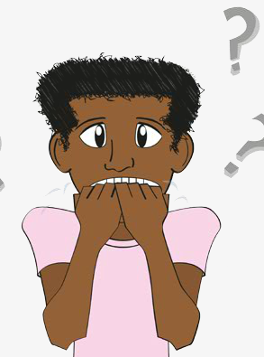

I DON'T NOW

"I don't know, I don't know, I don't know!" Says William repeatedly. He is worried about what to do in the future.
Lots of people don't really know what to be when grow up. If you take a wrong decision when you are young, you can become a very unhappy adult.
Imagine that many people spend about ten hours of their day in the company, of course, some people more, some people less. But, the day has only twenty-four hours, so you have now only fourteen hours to sleep, have a shower, eat three meals, study, have fun, watch TV, and many other things.
Researches show that three in ten people around the world are not happy with their jobs. It takes us to thirty percent of the world workforce.
We ate not talking about simple employees, we are also talking about managers and employers.
These ones work on average more than thirteen hours per day.
So, you need rapidly to think about your future. Take some time to discuss with some adults, the happy and sad ones.
Every work is difficult, unlike it would not be a work.
"I need to decide what to do" William says to his father. "But you are only eight William. You can take this decision some years later." Says his father.